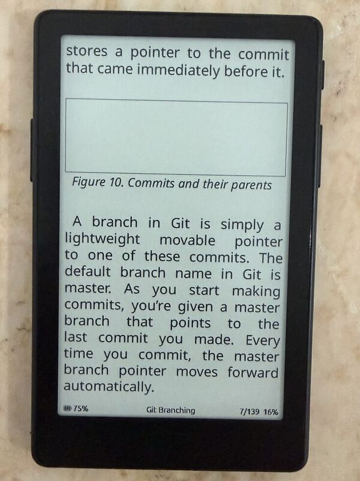
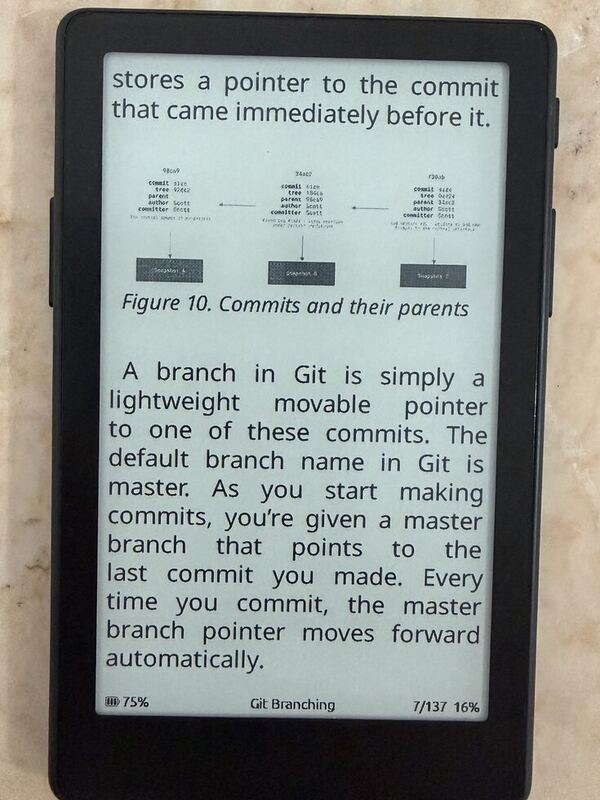
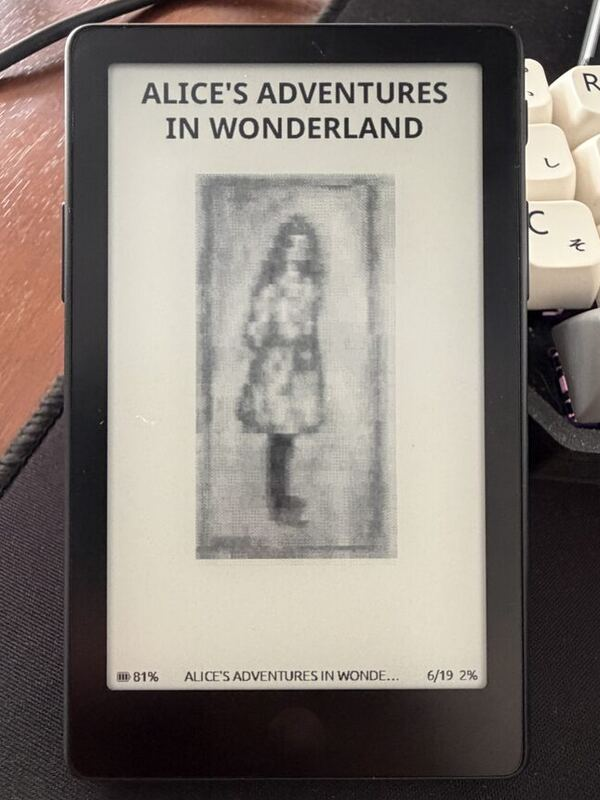
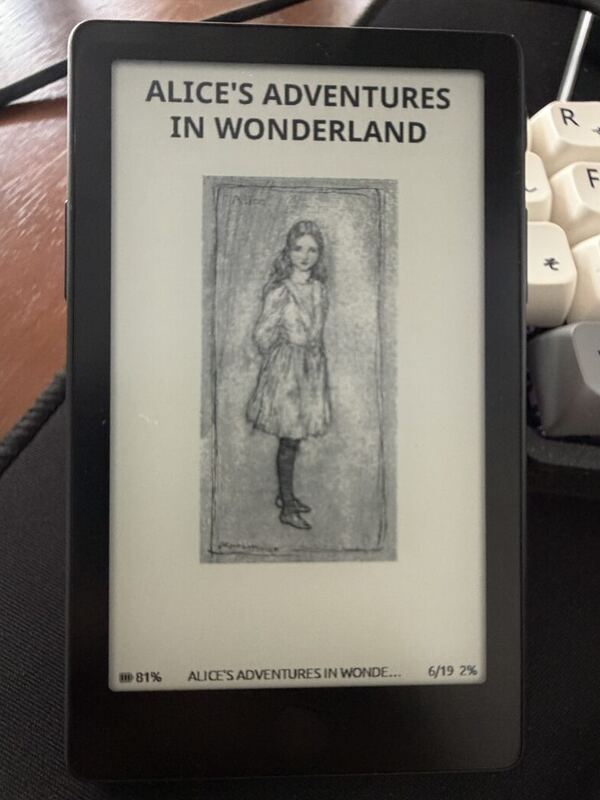

Missing image → visible
CrossPoint silently drops wide PNG diagrams. prensa fits them to the screen, so they show up.


Pro Git, Figure 10. 24 of the book’s 188 images were missing; after prensa, all of them show.
For Xteink readers on CrossPoint
Diagrams that vanish, blurry illustrations, books too heavy for the reader: prensa fixes them in a new copy of your EPUB.
Optimizing…
→
Download optimized EPUBCopy it to your reader like any other book.
Sizes compare the whole EPUB, not just the images.
The same page on an Xteink X4 Pro running CrossPoint: the original book, then the copy from prensa.
CrossPoint silently drops wide PNG diagrams. prensa fits them to the screen, so they show up.


Pro Git, Figure 10. 24 of the book’s 188 images were missing; after prensa, all of them show.
CrossPoint shows progressive JPEGs at 1/8 of their resolution. prensa rewrites them so they show in full.


Alice’s Adventures in Wonderland, illustrated by Arthur Rackham.
And lighter books: Pro Git goes from 13.99 MB to 2.68 MB (−81%).
Any EPUB from your computer or phone. It is read by this page and never sent anywhere.
Every image is fitted to your reader’s screen, converted to grayscale and saved in a format CrossPoint shows in full. Embedded fonts are removed. The text stays the same.
Download the new EPUB and copy it to your reader like any other book. Your original file is left as it was.
The same optimizer as a command-line tool, for one book or a whole library.
cargo install prensa-cli
prensa book.epub book-optimized.epubprensa is open source. Reports from real books and readers help most; issues marked good first issue are a good place to start with code.